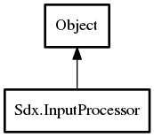

InputProcessor
Object Hierarchy:

Description:
public class InputProcessor :
Object
An InputProcessor is used to receive input events from the keyboard and the touch screen (mouse on the desktop). For this it has to be
registered with the {link Input#setInputProcessor(InputProcessor)} method. It will be called each frame before the call to
ApplicationListener.Render(). Each method returns a boolean in case you want to use this with the {link InputMultiplexer} to
chain input processors.
based on code by mzechner
Content:
Delegates:
- public delegate bool InputProcessorKeyDown (int keycode)
Called when a key was pressed
- public delegate bool InputProcessorKeyUp (int keycode)
Called when a key was released
- public delegate bool InputProcessorKeyTyped (char character)
Called when a key was typed
- public delegate bool InputProcessorTouchDown (int x, int y, int pointer, int button)
Called when the screen was touched or a mouse button was pressed. The
button parameter will be {link Buttons#LEFT} on iOS.
- public delegate bool InputProcessorTouchUp (int x, int y, int pointer, int button)
Called when a finger was lifted or a mouse button was released. The
button parameter will be {link Buttons#LEFT} on iOS.
- public delegate bool InputProcessorTouchDragged (int x, int y, int pointer)
Called when a finger or the mouse was dragged.
- public delegate bool InputProcessorMouseMoved (int x, int y)
Called when the mouse was moved without any buttons being pressed.
Will not be called on iOS.
- public delegate bool InputProcessorScrolled (int amount)
Called when the mouse wheel was scrolled. Will not be called on iOS.
Creation methods:
Methods:
Fields: